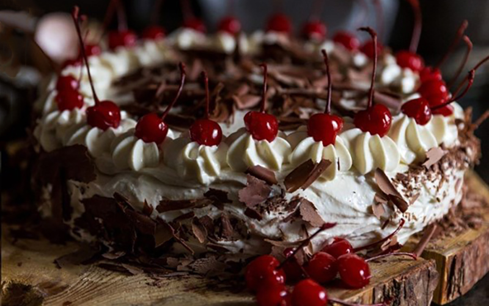
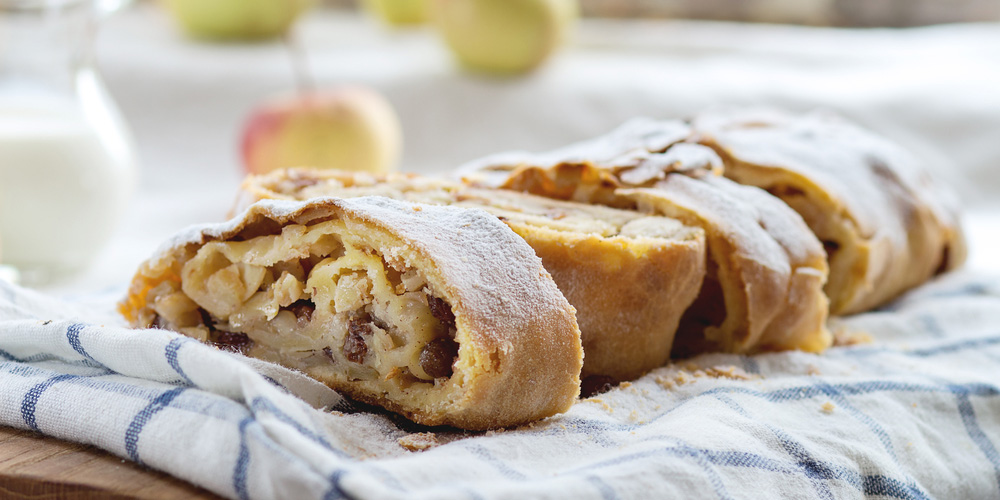
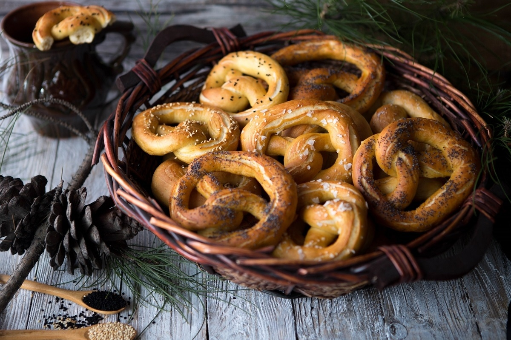
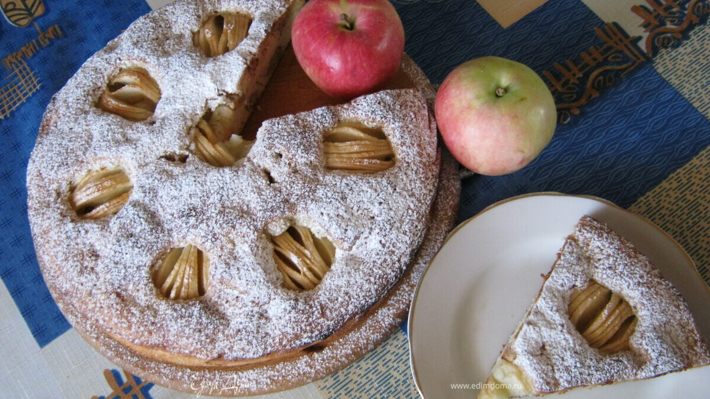
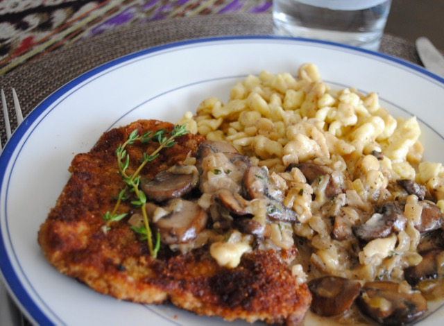
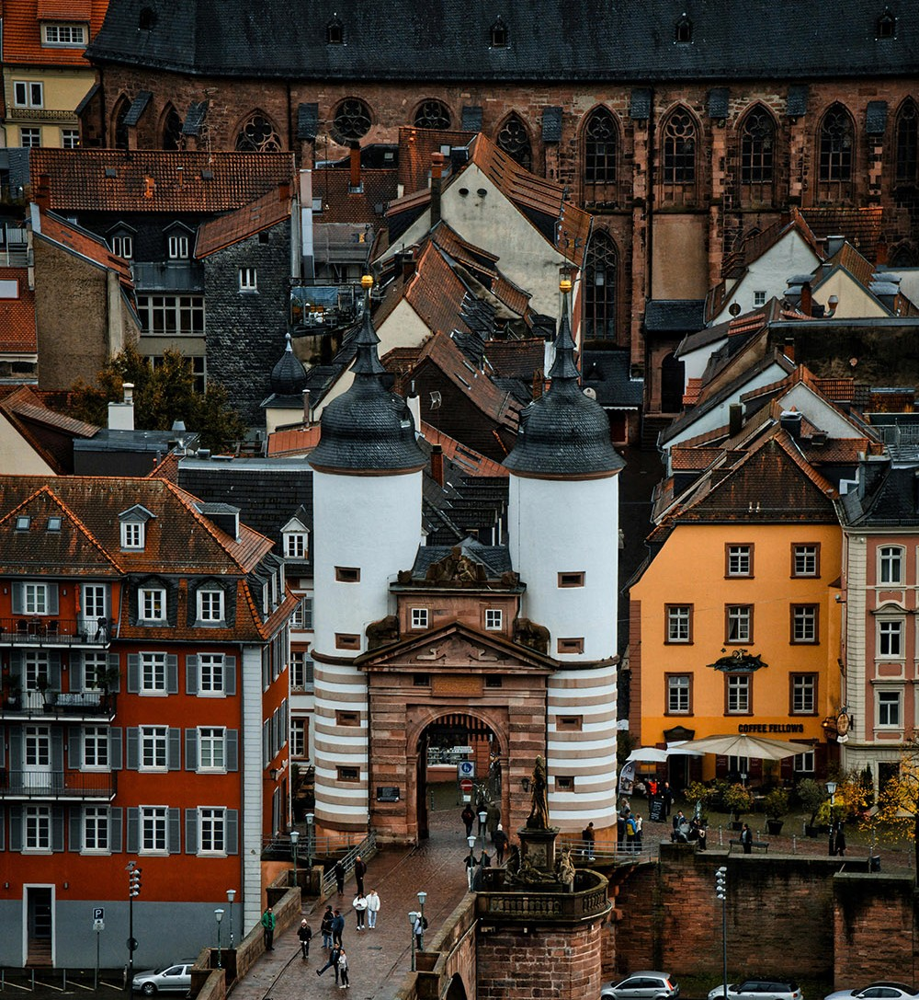
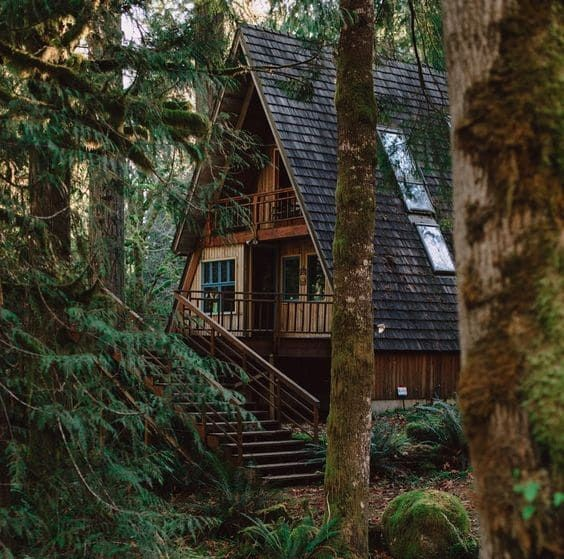
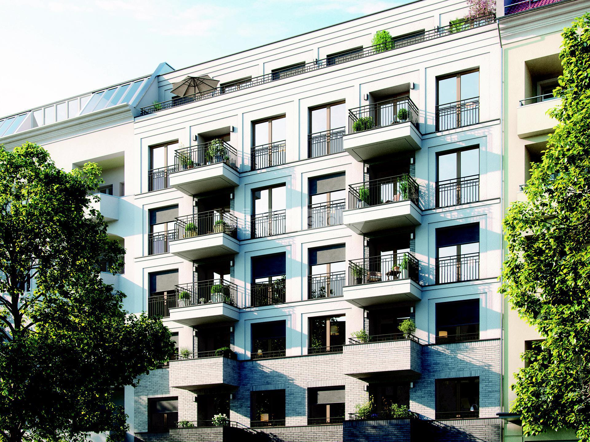

Пекарни, уютные кафе и дома мечты
«Я люблю сладости, выпечку и разные напитки... Ещё я хочу посещать небольшие пекарни, пить горячий шоколад и пробовать десерты в уютных кафе.»
🍰 Что я хочу попробовать из немецкой кухни
Сладости, традиционная выпечка, горячие напитки и душевные кафе

Шварцвальдский торт
Шоколад, вишня и взбитые сливки
Яблочный штрудель
Яблоки, корица и нежное тесто
Немецкие брецели
Румяные крендели из пекарни
Яблочный пирог
Домашняя выпечка к горячему чаю
Шпецле и Шницель
Традиционные немецкие блюда🏡 Где я хочу жить в Германии
Атмосферное жильё: от старинного города до уютного домика у леса

Квартира в Гейдельберге
Высокие потолки и вид на старые крыши
Домик на окраине леса
Мягкий плед, книги и вид на деревья
Апартаменты в Берлине
Городская жизнь, музеи и немецкий язык✨ «Я хочу гулять по старинным улицам без спешки, фотографировать красивые здания... Прохладная погода, золотые листья, туманные леса, старинные замки и маленькие кафе, в которых пахнет свежей выпечкой. Мне хочется увидеть не только туристическую Германию, но и её тихую, повседневную сторону.»